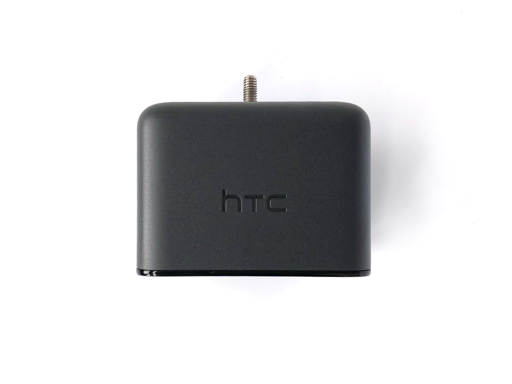
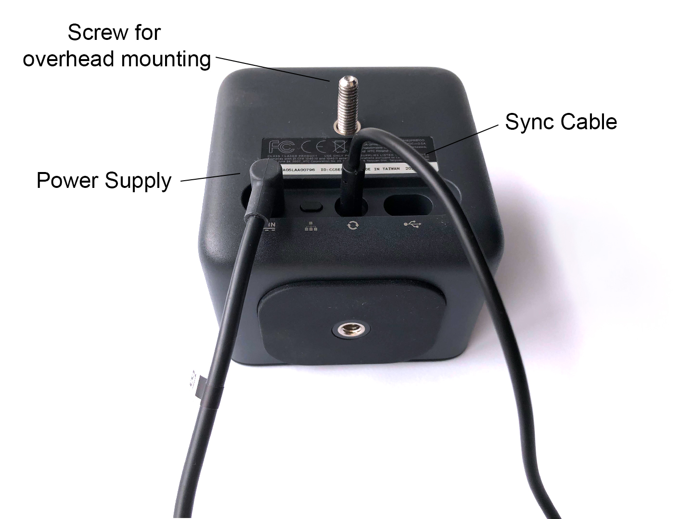
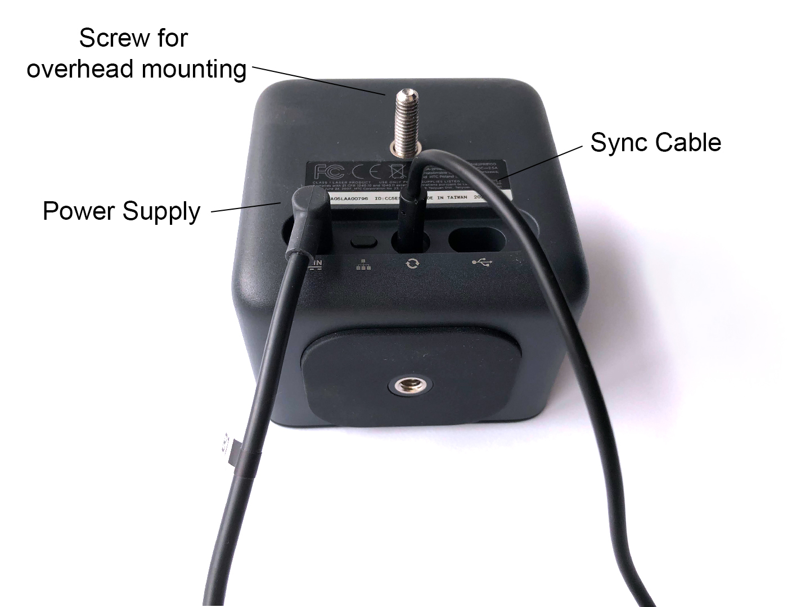

Setup¶
Mount 2 Vive Base Station Lighthouses over the setup.
Connect one power adaptor to each base station.
Using an audio to audio cable, connect the basestations to each other to synchronise them.
 

Set one base station to ‘A’ and one to ‘b’ using the channel button (illustration below is from the Vive manual)

1. Status light
2. Front panel
3. Channel indicator (recessed)
4. Power port
5. Channel button
6. Sync cable port (optional)
7. Micro-USB port (for firmware updates)